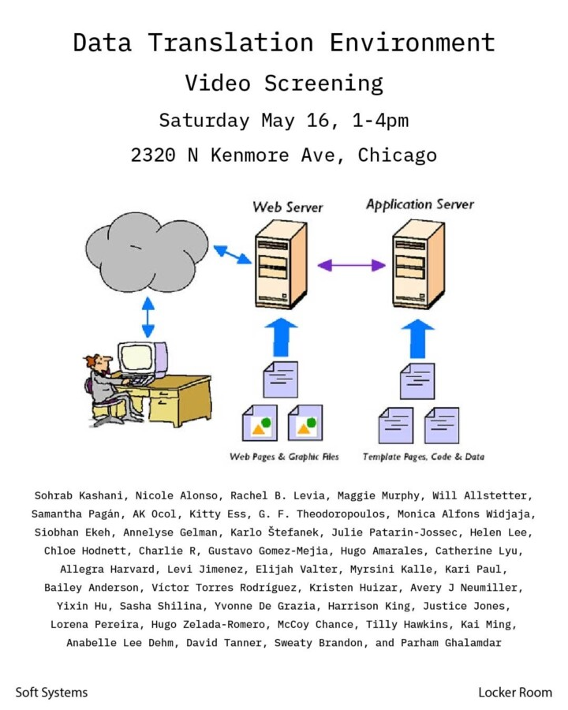

Data Translation Environment
Soft Systems & Locker Room present Data Translation Environment — an opening reception and video screening taking place Saturday, May 16 from 1–4pm at 2320 N Kenmore Ave, Chicago.
The show will be on view from May 16 – May 26, 2026, open hours 12-4 M-Th. Email ourlocker121@gmail.com for inquiries.
Soft Systems has created a micro data center for collecting media inside of Locker Room. The exhibition explores the image: copies of copies, image compression, reproduction of images, data transformation, data corruption, and data manipulation.
Featuring contributions from: Sohrab Kashani, Nicole Alonso, Rachel B. Levia, Maggie Murphy, Will Allstetter, Samantha Pagán, AK Ocol, Kitty Ess, G. F. Theodoropoulos, Monica Alfons Widjaja, Siobhan Ekeh, Annelyse Gelman, Karlo Štefanek, Julie Patarin-Jossec, Helen Lee, Chloe Hodnett, Charlie R, Gustavo Gomez-Mejia, Hugo Amarales, Catherine Lyu, Allegra Harvard, Levi Jimenez, Elijah Valter, Myrsini Kalle, Kari Paul, Bailey Anderson, Víctor Torres Rodríguez, Kristen Huizar, Avery J Neumiller, Yixin Hu, Sasha Shilina, Yvonne De Grazia, Harrison King, Justice Jones, Lorena Pereira, Hugo Zelada-Romero, McCoy Chance, Tilly Hawkins, Kai Ming, Anabelle Lee Dehm, David Tanner, Sweaty Brandon, and Parham Ghalamdar